4Chan/Reddit Video Maker V4.1.2 (Beta)
(Information Aggregate/Display) [JavaScript Web Application]
By Malachi Beerram
> OUTPUT EXAMPLE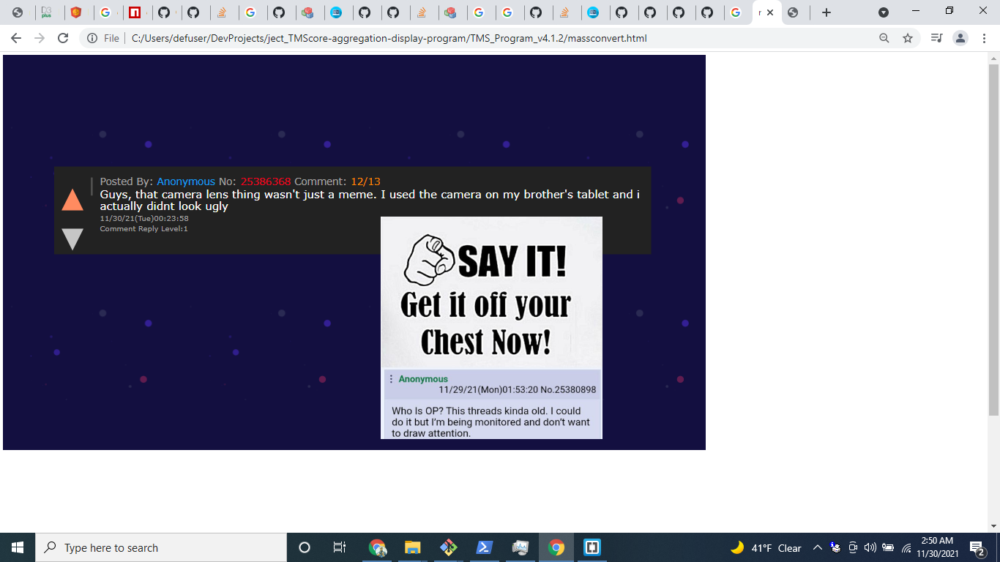
> How To Get Started
- Open the ‘MassCoverter’ Web App
- Link -- >https://malac-253.github.io/ject_TMScore-aggregation-display-program/TMS_Program_v4.1.2/massconvert.html
- Should look like VVV
- 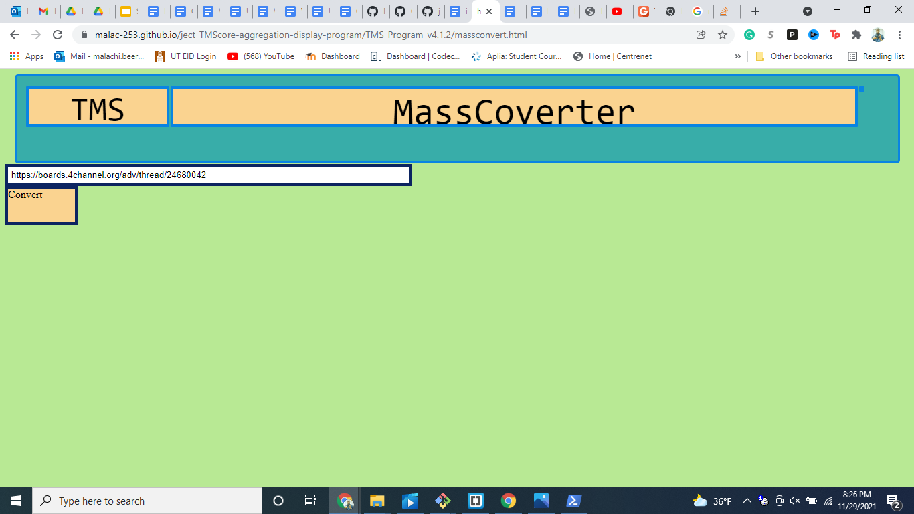
- Find 4chan link (at your own risk, of course)
- Should look something like … “https://boards.4channel.org/adv/thread/25384477”
- Start here to find a link … “https://boards.4channel.org/adv/catalog”
- Paste into text box and press ‘Convert’
- Expectedly/Inevitably Break The System
- Should look like VVV
- 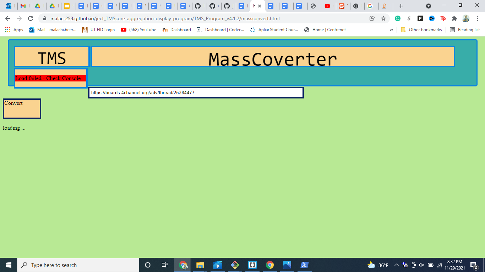
- This happens because this app is requesting information from a secure location. In the console you should see VVV
- 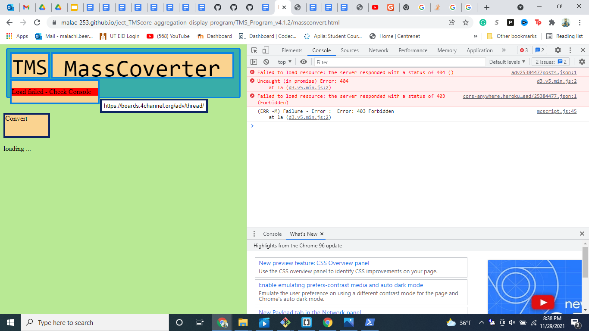
- Error 403 - Forbidden
- Utilize Cross-origin resource sharing Server (CORS)
- Navigate to this Webpage → LINK
- Should look like VVV
- Temporarily unlock access to the demo by clicking
- Should look like VVV
- 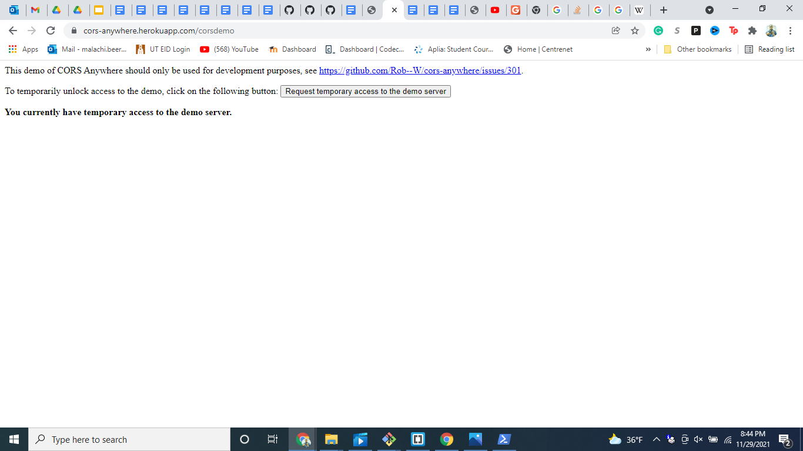
- Open the ‘MassCoverter’ Web App and Try Again (Redo Step 1)
- After loading it should look something like this VVV
- 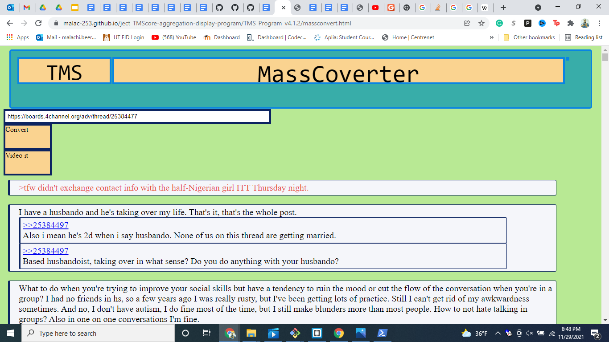
- With nested replies. (In text links don't work in this version)
- The standard aggregate display should work now, as well.
- Try it LINK ---> “https://malac-253.github.io/ject_TMScore-aggregation-display-program/TMS_Program_v4.1.2/”
- Should look like this VVV
- 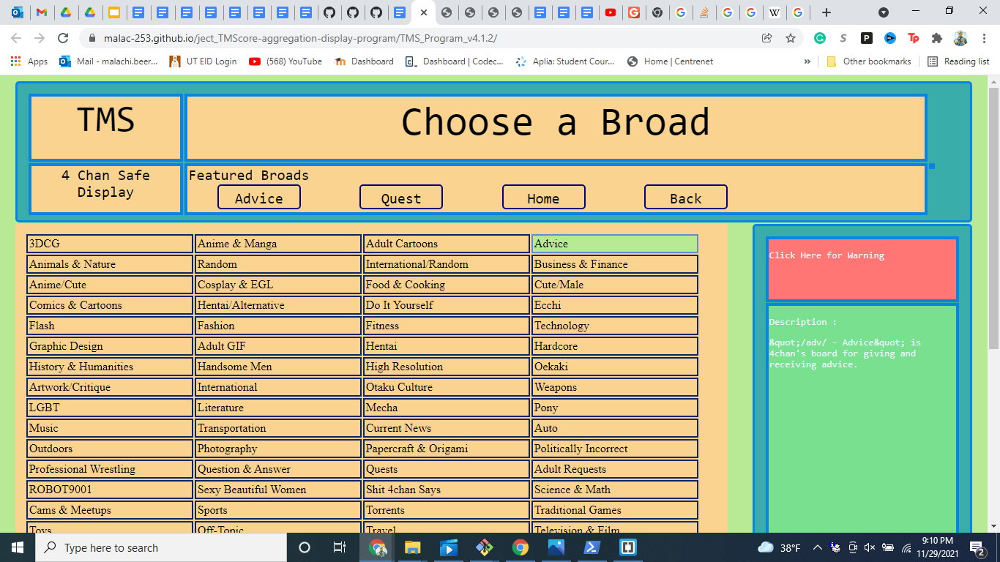
- Click in any Broad (at your own risk), should look something like this VVV, click through pages and click a thread with a high amount of replies
- 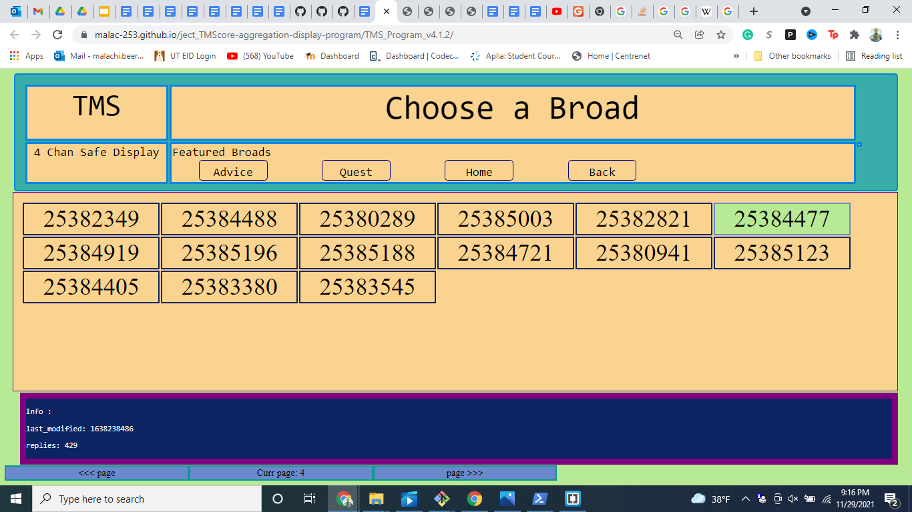
- Click in any Thread (at your own risk), should look something like this VVV
- 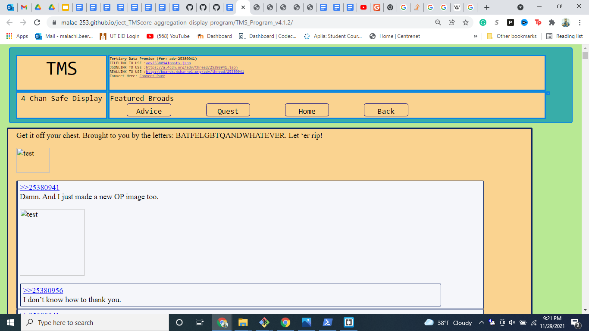
- OH NO, Where are the images !!!!!
- How to get the images back
- Because everything's been done automatically, 4chan will want to check if you are a robot or web scraper,
- Open the ‘test’ in a new tab … by right clicking, sometimes the outline of the image will not appear and so you have to click around for the image.
- 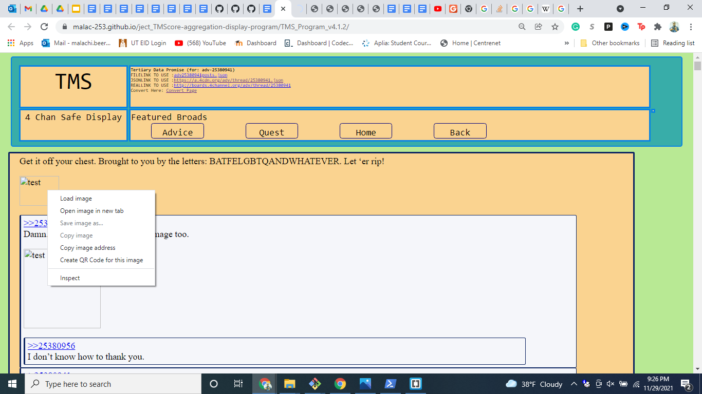
- BREAKING NEWS [11/29/21 - BUG NOTE - The API no longer prompts for Authentication the way it had been doing so for 4 years, thur currently images are not supported in the web app, but you can only see images by opening in a new tab --- Sorry]
- Turn into a video (Beta) [Everything here is Beta, my Friend] 1
- Open the conversion page in a new tab either with the link in step one or at the top of the thread viewing page ‘Convert Page’ (Or here). VVV
- 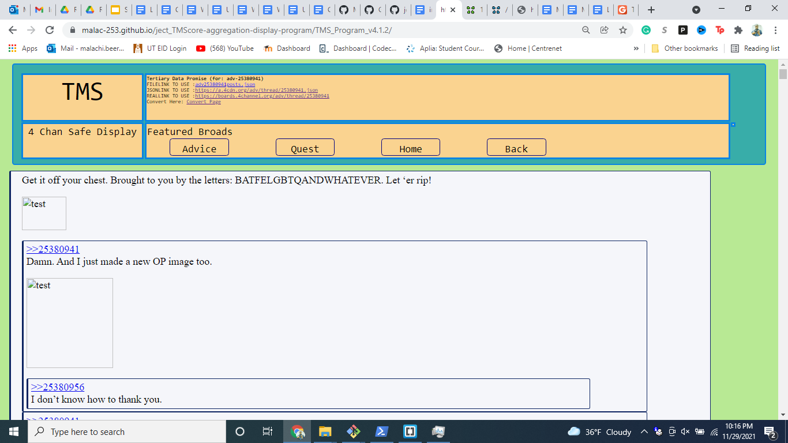
- Put the ‘REALLINK’ into the ‘MassCoverter’ conversion page text box, and hit convert, wait some time for it to load, and check to ensure the same thread you saw comes up again.
- Should look like this VVV
- 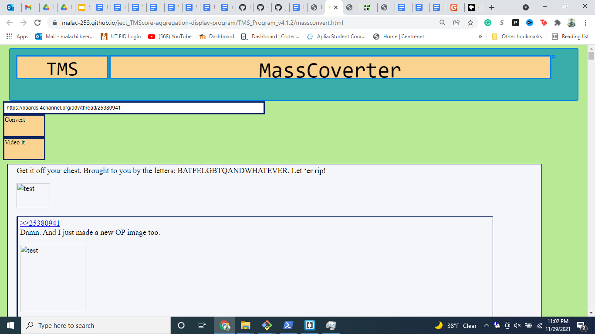
- Then click ‘Video it’, to be brought to the app set up page, should look something like this vvv
- 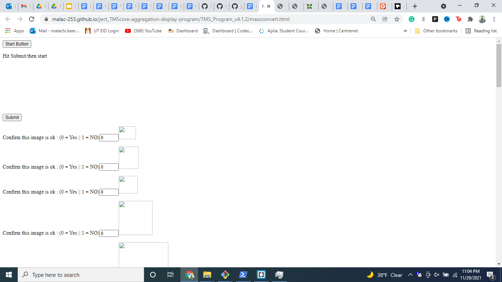
- [Assuming the image authentication is fixed] The page will show you every single image included on the thread, And ask whether this image is safe enough to be included in the video. The default answer is yes, but to change it to no, you would switch the 0 to a 1 …
- Turn into a video (Beta) 2
- Scroll down until you see the main set of settings VVV
- 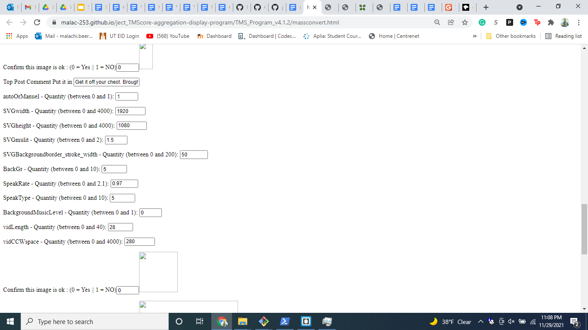
- Options list (You don't have to change anything, just hit submit then start)
- Top Post Comment Put it in: Default Flex
- Allows you to edit the first comment, change was first said in the video.
- autoOrManuel - Quantity (between 0 and 1): Default 1
- 0 - auto - will start 10 seconds after hitting play
- 1 - manuel - will wait for confirmation to start
- SVGwidth - Quantity (between 0 and 4000): Default 1920
- should not change - Self-explanatory - Resolution width
- SVGheight - Quantity (between 0 and 4000): Default 1080
- should not change - Self-explanatory - Resolution height
- SVGmulit - Quantity (between 0 and 2): Default 1.5
- should not change - Affects scaling - allows for future functionality with different devices
- SVGBackgroundborder_stroke_width - Quantity (between 0 and 200):
- should not change - Effects viewport padding in window, how thick the borders around the video
- BackGr - Quantity (between 0 and 10): Default 5
- can change - Change it the background of a video, choices down below
- 5 - Firefly (Standard)
- 1- Maze (Broke)
- 4 - Rain
- Will add more soon
- SpeakRate - Quantity (between 0 and 2.1): Default 0.97
- can change - Will affect the speed of the video , 1 = 100%
- SpeakType - Quantity (between 0 and 10): Default 5
- can change - Will affect the type of voice used in the video
- 4,6 - English male
- 5 - English female
- There are others
- 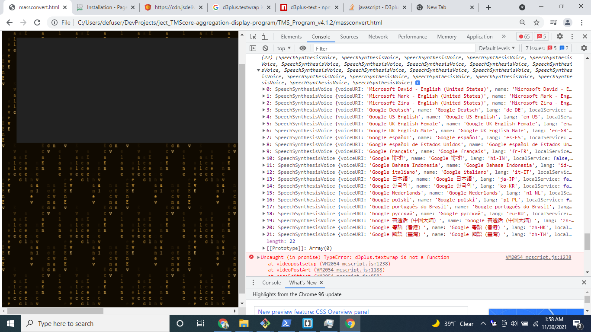
- BackgroundMusicLevel - Quantity (between 0 and 1):
- [deprecated] - No longer included in this version,
- vidLength - Quantity (between 0 and 40): Default 28
- Videos splits after a certain number of mins, under 5 will break the program
- vidCCWspace - Quantity (between 0 and 4000):
- [deprecated] - No longer included in this version,
- Character space between cut cards …. character limit spacing between engagement card
- Then hit submit, and then start VVV
- Zoom out and ,If on manual, hit ‘start vid’
- 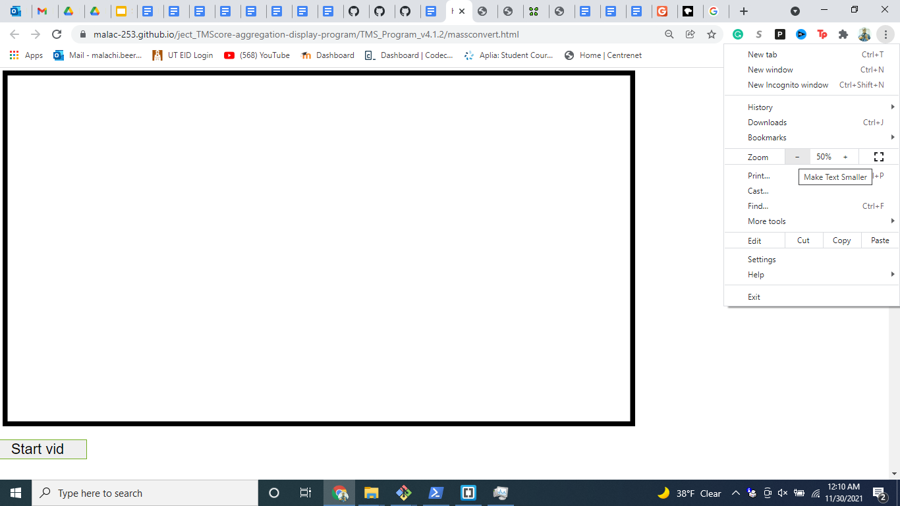
- ENJOY …. It should look something like VVV
- Unfortunately there is no way to pause it, in this version.
- The removal of the cut card means that,